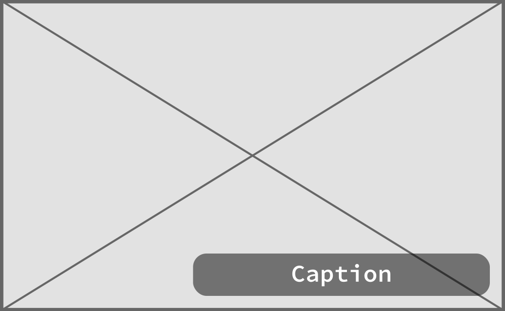
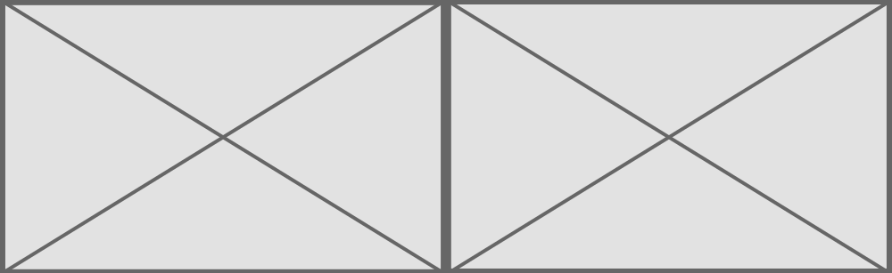

Don’t worry about embed-containers only worry about positioning—but the image does need to resize. Use the shortened class names.
Don’t worry about embed-containers only worry about positioning—but the images do need to resize. Use the shortened class names.
